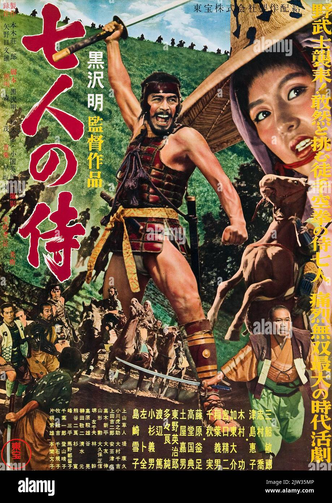

Seven Samurai
I recently had the pleasure of watching Akira Kurosawa's Seven Samurai at the Eye Filmmuseum in Amsterdam.  Original release poster
A village employs a rag-tag crew of hungry Samurai to defend them from a posse of marauding bandits. The bandits are repulsed, the crops are saved, and the samurai find love and stick around.
A beautiful allegory for the origins of statehood. Some stills: